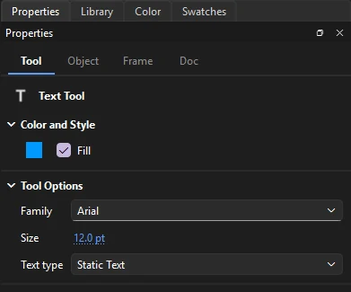

Drawing
Text
Text in Phoenix stays editable: you can retype it, restyle parts of it, and resize its box at any time.
Add text
Press T for the Text tool, then:
- Click to start a box that grows as you type. Press Enter for a new line.
- Drag to make a box of a fixed width. Text wraps onto new lines at its right edge.
To finish, press Esc, click elsewhere, or pick another tool. Each editing session is one step to undo. If you delete all the text in a box, the box is removed.

Edit text
Click existing text with the Text tool to place the caret in it.
| Key or action | Does |
|---|---|
| ← → | Move the caret |
| Home End | Move the caret to the start or end of the text |
| ↑ ↓ | Move the caret to the line above or below |
| Ctrl+← Ctrl+→ | Move a word at a time |
| Shift with those keys | Extend the selection |
| Drag across text | Select a range |
| Double-click a word | Select the word |
| Ctrl+A | Select all the text in the box |
| Backspace Delete | Delete characters or the selection |
| Ctrl+C Ctrl+X Ctrl+V | Copy, cut and paste characters, to and from other apps too |
To type in Chinese, Japanese, Korean or another language that uses an input method, switch to it as usual: the characters being composed show underlined at the caret, with the input method's candidates beside them, and go into the text when you choose them.
Typing replaces the selected text. Changing the font, size or fill color while text is selected restyles just that part.
Box width
While you edit, a text box shows a small handle: round on a growing box, square on a fixed-width one. Drag the handle to set a width. Double-click a square handle to let the box grow again.
Character and paragraph settings
Select a text box with the Selection tool, or click into one with the Text tool, and the Object tab of the Properties panel shows its settings. With the Selection tool a change applies to the whole box, or to every text box selected. While typing, character settings apply to the selected characters and paragraph settings to the paragraphs the selection or caret is in.
- Family, Size, Color
- The font, its size in points (a point is a pixel on the stage at 100%) and the text color.
- Style
- B and I for bold and italic (drawn bolder or slanted when the font has no bold or italic face), and Superscript or Subscript, set smaller above or below the line.
- Letter spacing, Auto kern
- Room added between letters, and whether the font's own kerning pairs are used.
- Anti-alias
- How the text is smoothed where it plays: device fonts, bitmap text, anti-aliasing for animation or for readability, or custom anti-aliasing.
- Direction
- Horizontal, or vertical: characters stand upright one under another, in columns that run from right to left (or, chosen so, from left to right), as Chinese, Japanese and Korean are often set. A return starts a new column; a fixed-size box starts one when a column reaches its foot. Letter animators work on vertical text, and Text on a Path runs it along a motion guide (see Behaviors).
- Link, Target
- A web address the characters open when clicked, and the window it opens in.
- Align
- Left, center, right or justified. A justified paragraph spreads each wrapped line to both edges; its last line stays to the left.
- Line spacing
- Room between lines, on top of the font's height.
- Indent, Left and Right margin
- How far a paragraph's first line starts in, and the room kept clear at either side of the box.
The Text menu
The menu applies the same settings to the selected text fields, or to the selected characters while you edit one:
- (Ctrl+Shift+B) and (Ctrl+Shift+I).
- (Ctrl+Shift+L), (Ctrl+Shift+C), (Ctrl+Shift+R) and (Ctrl+Shift+J), for whole paragraphs.
Text types
The Text type setting matters if your document will be used in a player or game engine that plays FLA or SWF content:
- Static Text
- Fixed text that is part of the artwork. Use this for anything that is just meant to be seen.
- Dynamic Text
- Text a script can change while the content runs, such as a score.
- Input Text
- A field the viewer can type into.
Dynamic and input text show a dotted outline on the stage. Their Options on the Object tab set what they do where they play:
- Instance
- The name scripts reach the field by.
- Behavior
- Single line, multiline, multiline without wrapping, or (for input text) password, which shows dots.
- Selectable, Show border, Render as HTML, Scrollable
- Whether the viewer can select the text, a box drawn around the field, text set from a script read as HTML, and a field that keeps its size while its text scrolls.
- Variable
- A variable an older script shows in the field.
- Max characters
- For input text, how much the viewer can type.
Break text apart
Select a text box and choose (Ctrl+B) to split it into one box for each letter, each standing where it stood. Break a single letter apart again to turn it into filled shapes in its color, which you can then reshape like any other drawing. The letters are no longer text after that, so you can't retype them.
Font symbols
Text can be set in a font symbol from the library, so the font travels with the document. See Font symbols.
Check spelling
goes through every text box in every scene and symbol, one word not in the dictionary at a time, showing it in its sentence with suggestions. Change fixes this one, Change All every one in the document; Ignore skips it, Ignore All skips it everywhere, and Add to Dictionary keeps it as a word from now on. Each change can be undone.
Phoenix uses the Windows spell checker and its dictionary, in the language Phoenix runs in. On other systems, Check Spelling says that no spell checker is available.
Find and replace text
(Ctrl+F) finds words, or every use of a font, in every text box of the document and can replace them all at once. See Find and Replace.
Missing fonts
When a document you open uses fonts that are not installed on your computer, Phoenix lists them and asks which installed font to show each one in. The document keeps the fonts it names, so it looks right again on a computer that has them. Phoenix remembers your choices for every document; change them under .
How text is drawn
Phoenix draws the text settings saved in FLA files, including alignment, letter and line spacing, kerning, and bold and italic. All text settings are kept when you save, even those that cannot yet be changed in Phoenix.
TLF text in older FLA and XFL files opens as classic text you can edit: its paragraphs and line breaks, and each span's font, size, color, bold, italic and tracking, with each paragraph's alignment. A TLF field with an instance name becomes dynamic text, so scripts can still reach it; the rest becomes static text. A TLF field Phoenix cannot read is kept as it was and saved back unchanged.